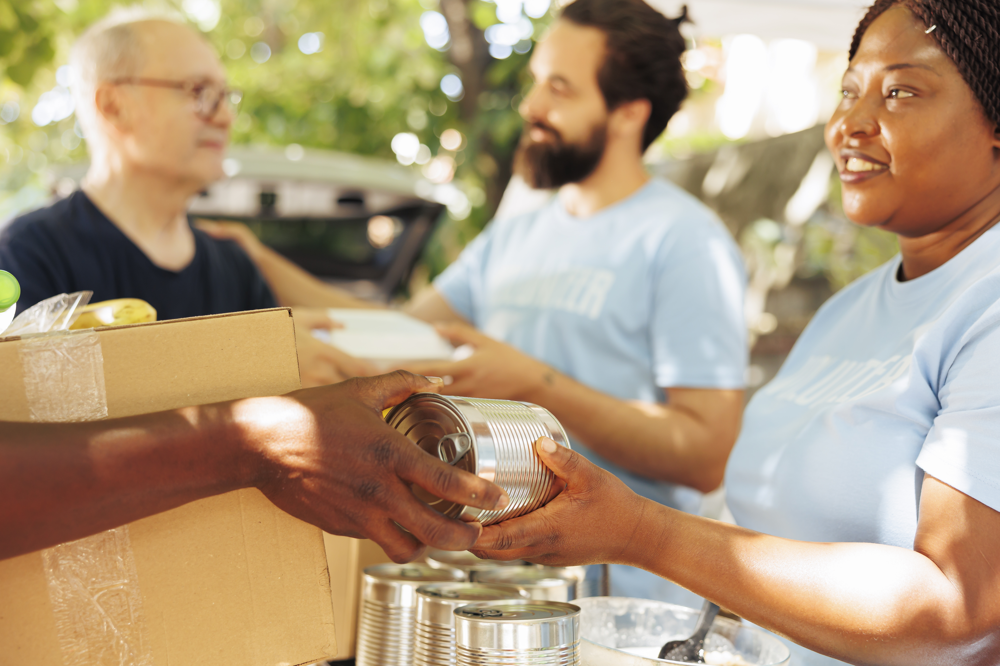

Sobre a Nossa ONG

Nossa missão é transformar vidas através da solidariedade e da ação comunitária, oferecendo suporte a quem mais precisa.
Componentes de Feedback Visual
Ação Concluída
Em Análise
Urgente
Sucesso! Sua inscrição para voluntariado foi registrada com sucesso.
Informativo: Próximo mutirão de arrecadação agendado para o próximo sábado.
Notificação: Novas vagas abertas para a oficina de educação!
Entre em Contato
Fale conosco para tirar dúvidas, fazer doações ou se tornar um voluntário:
- E-mail: contato@nossaong.org.br
- Telefone: (11) 99999-8888
- Endereço: Rua da Solidariedade, 123 - São Paulo/SP